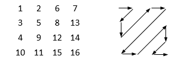

Cho một ma trận vuông kích thước n x n, bạn hãy điền các số từ 1 đến n2 vào ma trận theo hình zigzag bắt đầu từ phía trên bên trái cho đến phía dưới bên phải. Ví dụ cho n = 4 thì ma trận zigzag là như sau:

Dữ liệu nhập:
Là số nguyên n (1 <= n <= 50)
Dữ liệu xuất:
Gồm n dòng biểu thị hình zig zag, mỗi dòng gồm n số nguyên, mỗi số cách nhau một khoảng trắng.